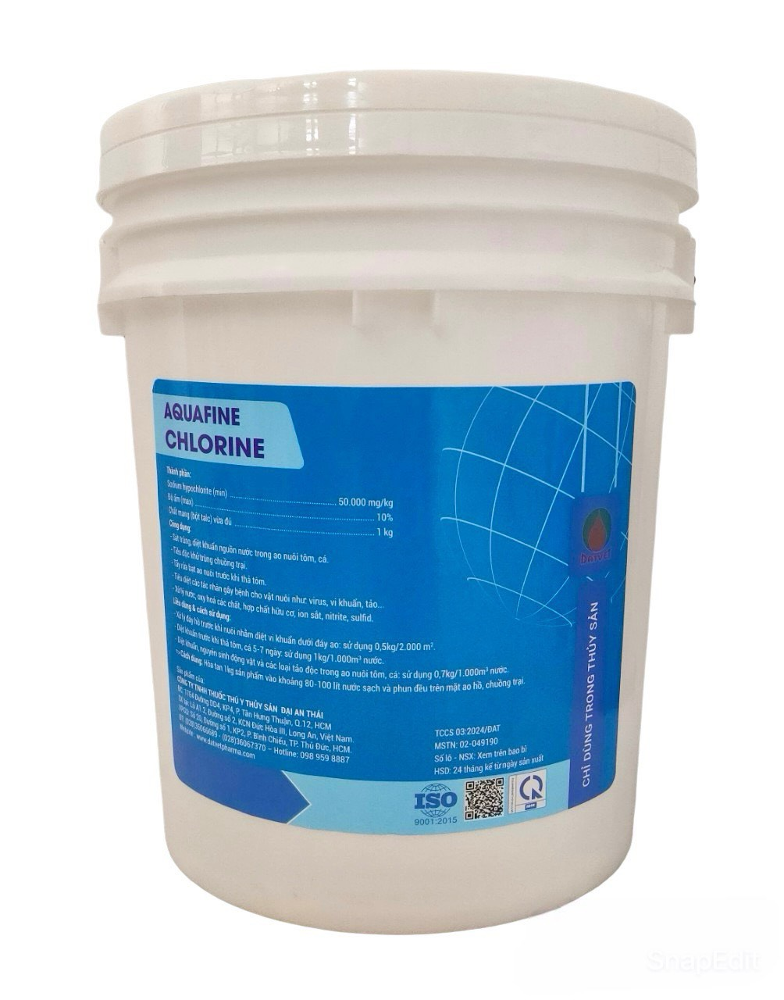
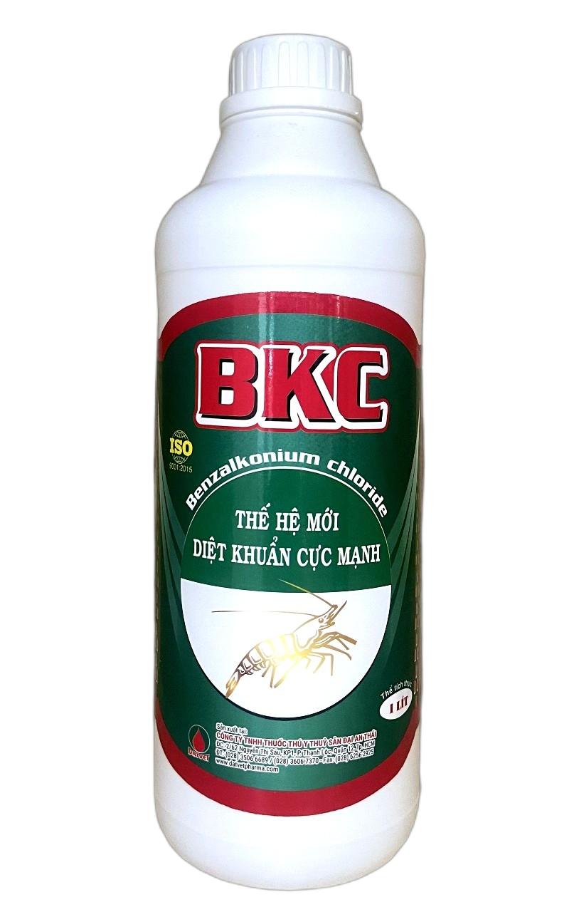
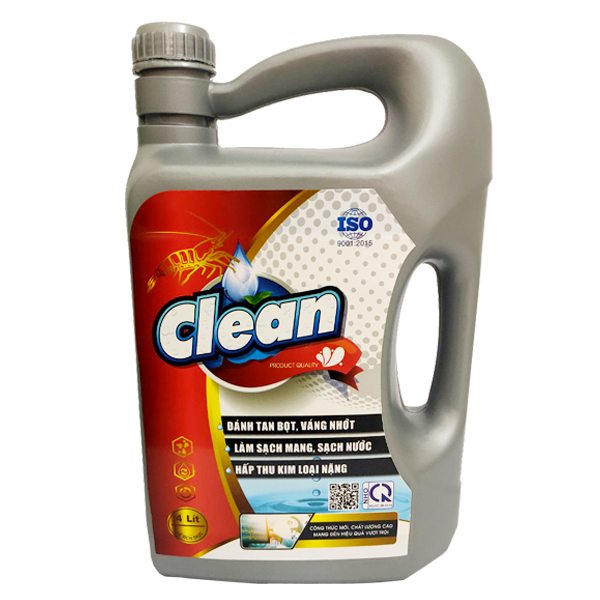
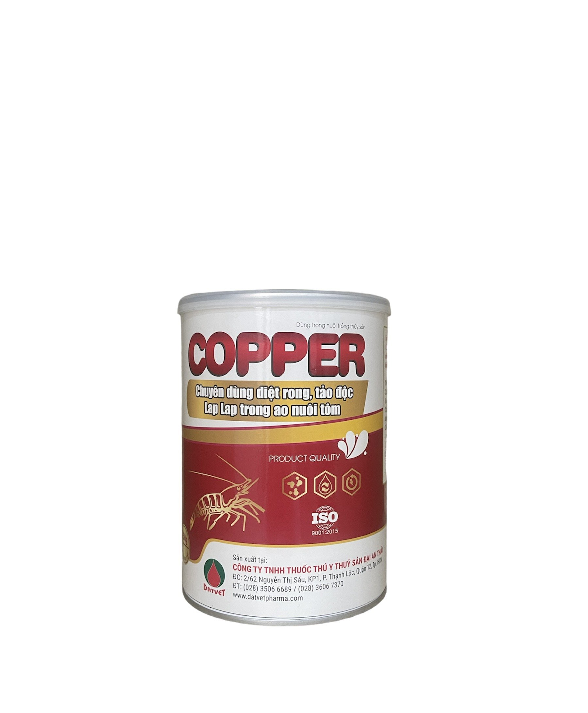
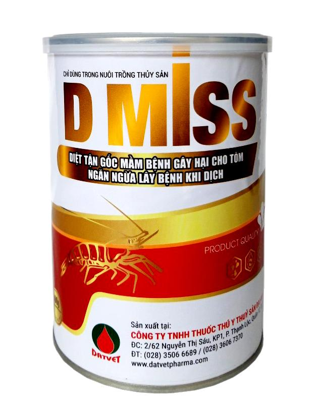
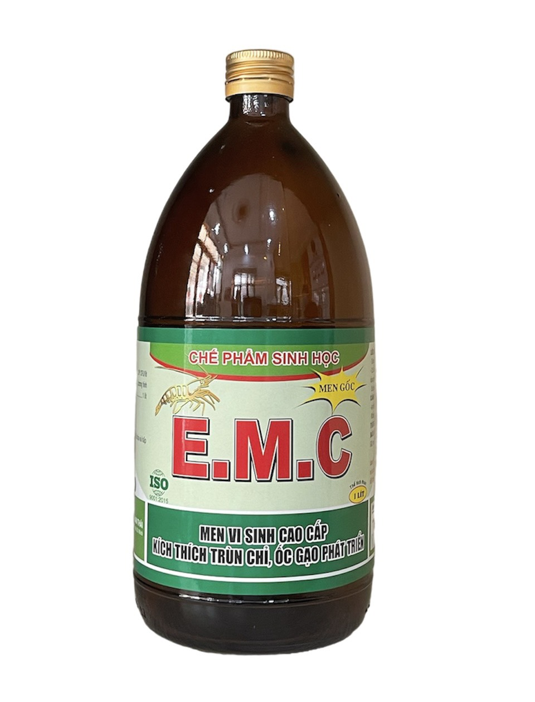
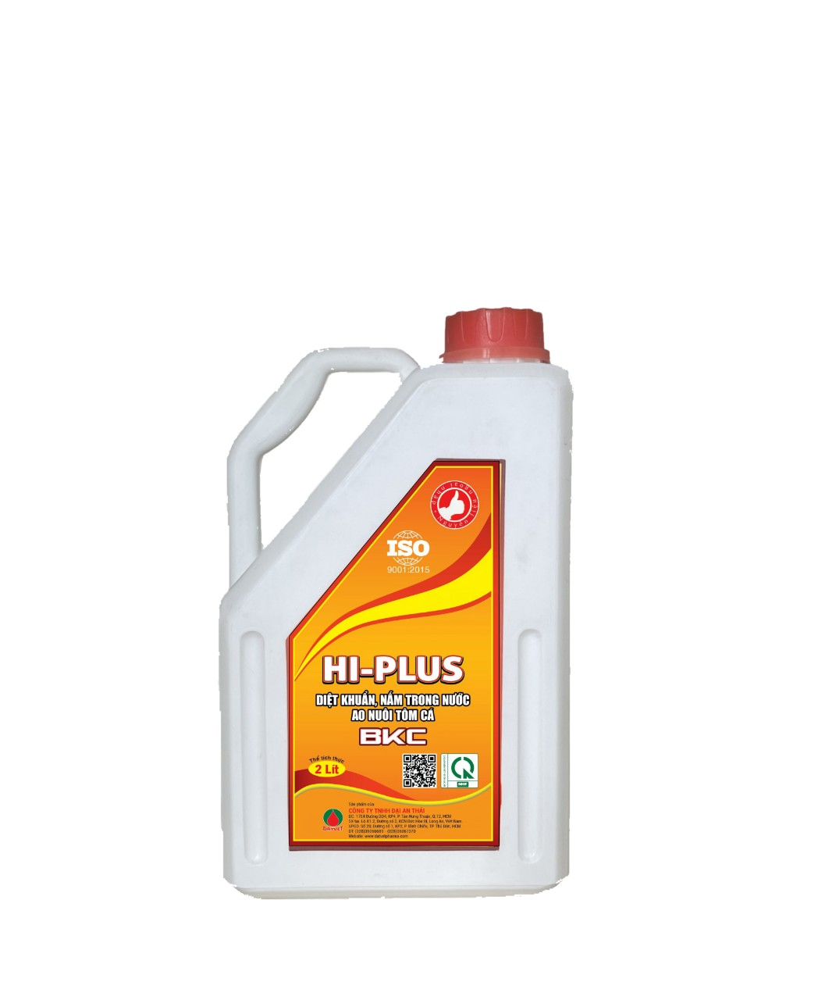
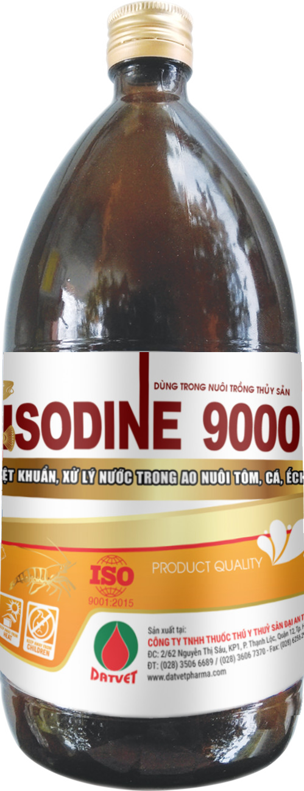
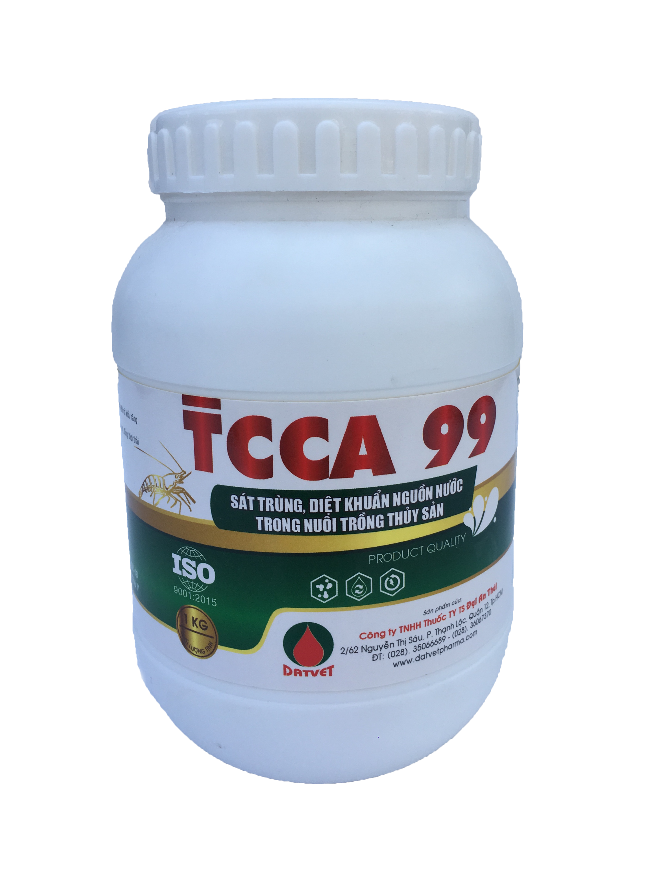
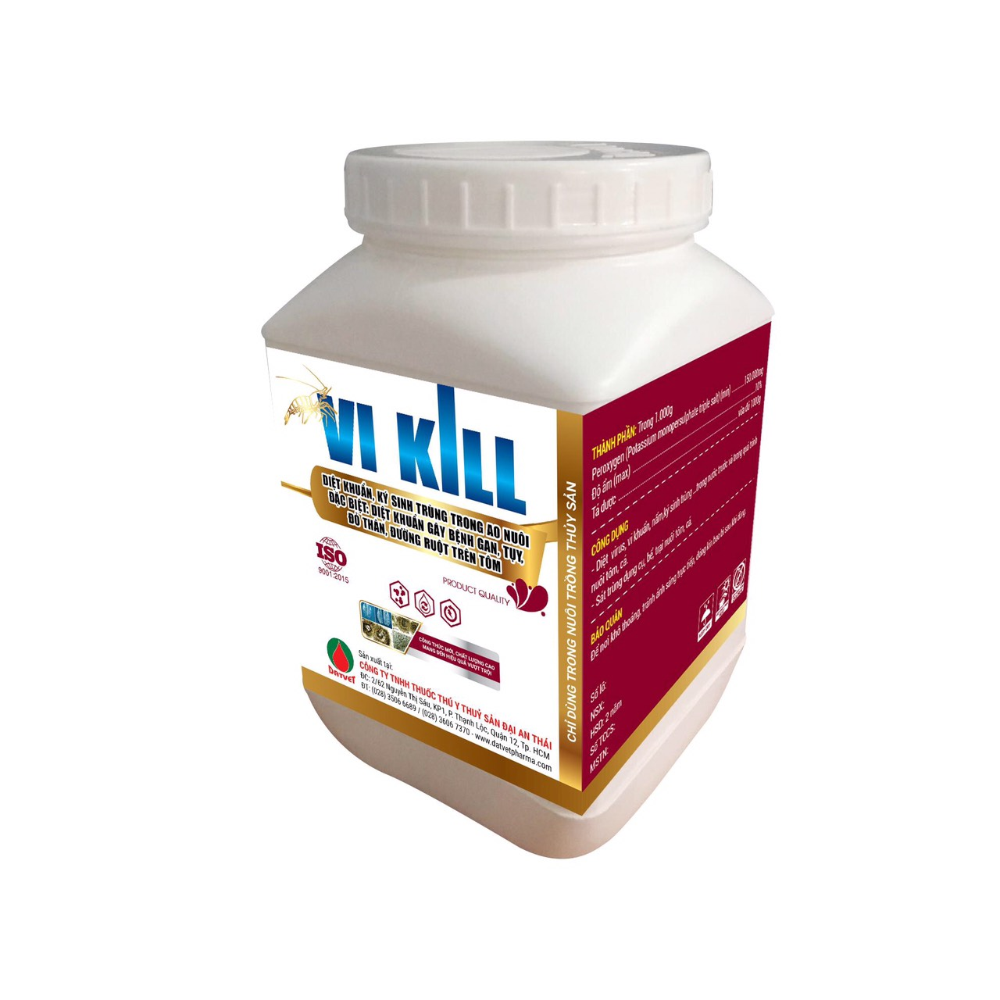

Nhóm Hóa Chất Diệt Khuẩn
12 sản phẩm
AQUAFINE CHLORINE
SÁT TRÙNG, DIỆT KHUẨN NGUỒN NƯỚC AO NUÔI TÔM CÁ
- Sát trùng, diệt khuẩn nguồn nước trong ao nuôi tôm, cá. - Tiêu độc khử trùng chuồng trại. - Tẩy rửa bạt ao nuôi trước khi thả tôm. - Tiêu diệt các tác nhân gây bệnh cho vật nuôi như: vius, vi khuẩn, tảo... - Xử lý nước, oxy hóa các hợp chất hữu cơ, ion sắt, nitrite, sulfid.

BKC
THẾ HỆ MỚI DIỆT KHUẨN CỰC MẠNH
- Xử lý nguồn nước trước khi thả, trong quá trình nuôi và trong ao lắng - Diệt khuẩn trong nguồn nước và thân tôm, giảm sự lan tràn của nấm bệnh, tảo độc, động vật nguyên sinh gây bệnh - Dùng để tẩy mang trong trường hợp mang đen và mang bị hoại tử - Ngăn ngừa hiệu quả: Đứt râu, rụng đuôi, gãy càng, đóng rong - Khống chế phiêu sinh vật, làm tăng độ trong của nước

CLEAN
- ĐÁNH TAN BỌT, VÁNG NHỚT - LÀM SẠCH MANG, SẠCH NƯỚC - HẤP THU KIM LOẠI NẶNG
- Giảm độ nhớt, hạn chế sức căng bề mặt, các chất lơ lững trong ao nuôi. - Làm lắng các chất hữu cơ và kết tủa kim loại nặng. - Loại bỏ các hóa chất độc hại trong quá trình xử lý chlorine. - Giúp mang và thân tôm sạch, tránh hiện tượng bị đóng phèn.

CLEAN
- ĐÁNH TAN BỌT, VÁNG NHỚT - LÀM SẠCH MANG, SẠCH NƯỚC - HẤP THU KIM LOẠI NẶNG
- Giảm độ nhớt, hạn chế sức căng bề mặt, các chất lơ lững trong ao nuôi. - Làm lắng các chất hữu cơ và kết tủa kim loại nặng. - Loại bỏ các hóa chất độc hại trong quá trình xử lý chlorine. - Giúp mang và thân tôm sạch, tránh hiện tượng bị đóng phèn.

COPPER
CHUYÊN DÙNG DIỆT RONG , TẢO ĐỘC, LAPLAP TRONG AO NUÔI TÔM.
- Diệt sạch các loại tảo độc: tảo phát sáng, tảo lam, tảo giáp, tảo đỏ, tảo nâu, tảo sợi, tảo đáy và các loại rong đuôi chồn, rong nhớt, rong đá, lap lap trong ao nuôi - Ngăn ngừa các bệnh tôm đóng rong, ký sinh trùng trên mang và thân tôm

D MISS
DIỆT KHUẨN CỰC MẠNH - DẬP DỊCH LÂY LAN TIÊU DIỆT TOÀN BỘ VI RÚT, VI KHUẨN GÂY BỆNH TRONG AO
- Diệt tận gốc các loại vi rút, vi khuẩn, nấm, ký sinh trùng gây bệnh trên tôm, cá. - Phòng và trị các bệnh: EMS, đốm đen, ăn mòn phụ bộ, đục cơ( do vi rút) - Diệt các loại vi rút đốm trắng, đầu vàng, phát sáng... ƯU ĐIỂM: - Sản phẩm tan hoàn toàn nên dễ khuếch tán đều trong ao nuôi - Không sốc tôm, không để lại dư lượng tồn lưu

DIODINE
SIÊU DIỆT KHUẨN, DIỆT NẤM, DIỆT VI RÚT, KÝ SINH TRÙNG
- Diệt khuẩn nguồn nước trước lúc thả tôm trong quá trình nuôi và diệt khuẩn trong ao lắng. - Tiêu diệt tận gốc vi khuẩn, vi rút, nấm, ký sinh trùng trong ao nuôi. - Ngăn ngừa các bệnh: Đứt râu, mòn đuôi, đen mang,... Làm sạch môi trường nước, không làm ảnh hưởng sự phát triển của tôm và tảo

E.M.C
MEN VI SINH CAO CẤP KÍCH THÍCH TRÙM CHỈ, ỐC GẠO PHÁT TRIỂN
- BỔ SUNG VI SINH CÓ LỢI VÀO THỨC ĂN CỦA TÔM, CÁ. GIÚP TÔM, CÁ TIÊU HÓA VÀ HẤP THỤ TỐT THỨC ĂN, TĂNG TRỌNG NHANH VÀ GIẢM HỆ SỐ TIÊU TỐN THỨC ĂN. - TĂNG KHẢ NĂNG MIỄN DỊCH CỦA TÔM, CÁ. - GIẢM HIỆN TƯỢNG PHÂN LỎNG DO VI KHUẨN CÓ HẠI XÂM NHẬP.

HI-PLUS
DIỆT KHUẨN, NẤM TRONG NƯỚC AO NUÔI TÔM, CÁ
- DIỆT KHUẨN NẤM, KÝ SINH TRÙNG, TẢO ĐỘC VÀ CÁC LOẠI RONG RÊU CÓ HẠI TRONG MÔI TRƯỜNG NƯỚC AO NUÔI TÔM, CÁ. - SÁT TRÙNG AO HỒ, BỂ ƯƠNG, DỤNG CỤ.

ISODINE 9000
DIỆT KHUẨN, XỬ LÝ NƯỚC TRONG AO NUÔI TÔM, CÁ, ẾCH
- Diệt khuẩn nguyên sinh động vật trong nước ao nuôi tôm, cá, ếch - Sát trùng dụng cụ ao nuôi tôm, cá, ếch

TCCA 99
SÁT TRÙNG - DIỆT KHUẨN DIỆN RỘNG. DIỆT HOÀN TOÀN MẦM BỆNH, SÁT TRÙNG, TẨY RỬA DỤNG CỤ NUÔI
- Diệt khuẩn cực mạnh, phổ kháng rộng, diệt hoàn toàn mầm bệnh gây hại cho tôm - Sát trùng, tẩy rửa dụng cụ nuôi

VI KILL
DIỆT KHUẨN, KÝ SINH TRÙNG TRONG AO NUÔI ĐẶC BIỆT: DIỆT KHUẨN GÂY BỆNH GAN, TỤY, ĐỎ THÂN, ĐƯỜNG RUỘT TRÊN TÔM
- Diệt virut, vi khuẩn, nấm, ký sinh trùng...trong nước và trong quá trình nuôi tôm cá - Sát trùng dụng cụ, bể trại nuôi tôm cá